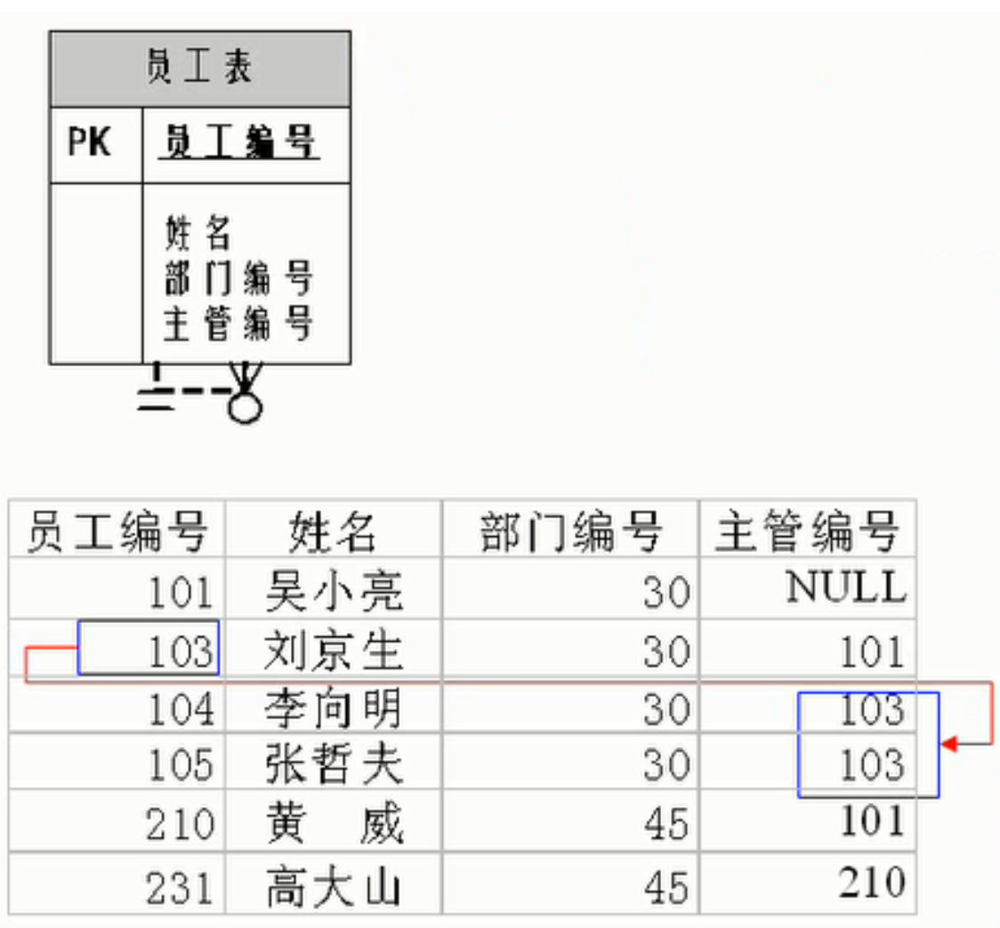
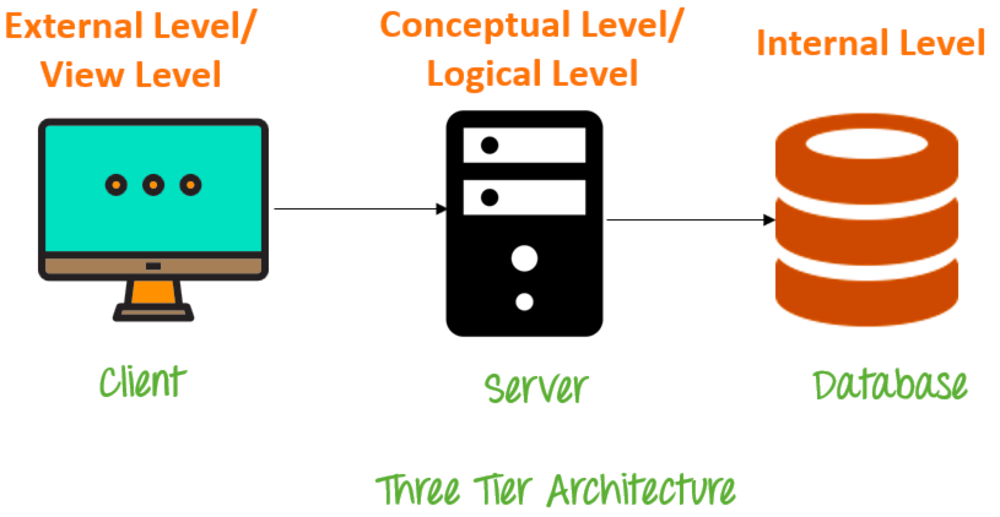
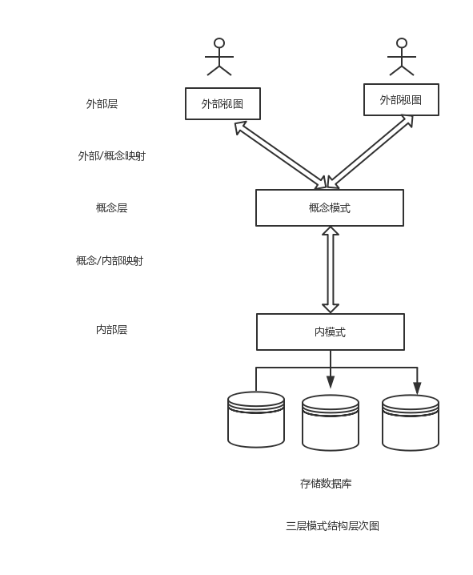

Review MySQL - Definitions&Schemas
It’s Tuesday Nov 15, 2022. After getting over from the breakup with my ex-gf, I have to start what I really need to do now.Thus, I will spend more time reviewing the knowledge of MySQL & Java.
Some Definitions 一些定义
DB = Data Base 数据库
DBMS = Data Base Management System 数据库管理系统
SQL = Structured Query Language 结构化查询语言
Common Databases 常见数据库
- Oracle(Relational)
- MySQL(Relational)
- SQL Server(Relational)
- MongoDB(Document)
- Elastic Search(Search engine)
- Redis(Key-value)
- PostgreSQL(Relational)
Rank Of Databases 数据库排名
https://db-engines.com/en/ranking
ORM Framework
ORM = Object Relational Mapping 对象关系映射
在java中
表-table = Java 的类
表种的一行数据 = Java类的一个对象
表的一个字段（列）= 类的一个属性
Relational Databases VS Non-Relational Databases
Relational Databases 关系型数据库
A relational database, also called Relational Database Management System (RDBMS) or SQL database, stores data in tables and rows also referred to as records. The term “relational database” was first used in 1970 by E.F. Codd at IBM in his research paper “A Relational Model of Data for Large Shared Data Banks.” Historically, the most popular relational databases have been Microsoft SQL Server, Oracle Database, MySQL and IBM DB2. Several free versions of these RDBMS platforms have gained popularity over the years, such as SQL Server Express, PostgreSQL, SQLite, MySQL and MariaDB.
Non-Relational Databases 非关系型数据库
The non-relational database, or NoSQL database, stores data. However, unlike the relational database, there are no tables, rows, primary keys or foreign keys. Instead, the non-relational database uses a storage model optimized for specific requirements of the type of data being stored.
Some of the more popular NoSQL databases are MongoDB, Apache Cassandra, Redis, Couchbase and Apache HBase.
There are four popular non-relational types: document data store, column-oriented database, key-value store and graph database. Often combinations of these types are used for a single application.
Types Of Relationships In Databases 表关系类型
There are 3 main types of relationship in a database:
- one-to-one 一对一
- one-to-many 一对多
- many-to-many 多对多
1.One To One 一对一
学生表 :学号、姓名、手机号码、班级、系别、身份证号码、家庭住址、籍贯、紧急 联系人、…
拆为两个表:两个表的记录是一一对应关系。
(常用信息):学号、姓名、手机号码、班级、系别
(不常用信息):学号、身份证号码、家庭住址、籍贯、紧急联系人、…
2.One To Many 一对多
员工表-部门表：员工表中部门用id表示，对应部门表的字段id，员工表中的id可重复使用，公司场景
分类表-商品表：商品表中的所属分类用id表示，对应分类的字段id，分类id应可重复使用，因为各种商品可能是同一个分类，电商场景
客户表-订单表：订单表中的客户id，对应客户表中的id
3.Many-To-Many 多对多
一般需要一个中间表，中间表确定其他2表之间的关系
学生信息表-课程信息表-选课信息表
产品表-订单表-订单明细表
*Self-referencing relationship 自我引用
A self-referencing relationship (also known as a recursive relationship) in a database occurs when a column in a table relates to another column in the same table. In such a relationship, only one table is involved. For example, the Staff table contains information about company employees and their managers, however, managers themselves belong to staff too.

Reference 参考：
https://blog.devart.com/types-of-relationships-in-sql-server-database.html
MySQL 的一些指令
- Login 登陆
1 | |
- Check Version Of MySQL查看版本
1 | |
- Check default charset 查看默认使用的字符集
1 | |
- Common command 常见指令
1 | |
SQL语言
| SQL FUNCTION | KEYWORD |
|---|---|
| DDL(Data Definition Language) | CREATE, DROP, ALTER |
| DQL(Data Query Language) | SELECT |
| DML(Data Manipulation Language) | INSERT, UPDATE, DELETE |
| DCL(Data Control Language) | GRANT, REVOKE, DENY |
DBMS Schemas: Internal, Conceptual, External
Database systems comprise of complex data structures. Thus, to make the system efficient for retrieval of data and reduce the complexity of the users, developers use the method of Data Abstraction.
There are mainly three levels of data abstraction:
- Internal Level: Actual PHYSICAL storage structure and access paths. 物理存储
- Conceptual or Logical Level: Structure and constraints for the entire database. 结构和约束
- External or View level: Describes various user views. 描述各类用户视图

Internal Level/Schema 内模式
The internal schema defines the physical storage structure of the database. The internal schema is a very low-level representation of the entire database. It contains multiple occurrences of multiple types of internal record. In the ANSI term, it is also called “stored record’.
Facts about Internal schema:
- The internal schema is the lowest level of data abstraction
- It helps you to keeps information about the actual representation of the entire database. Like the actual storage of the data on the disk in the form of records
- The internal view tells us what data is stored in the database and how
- It never deals with the physical devices. Instead, internal schema views a physical device as a collection of physical pages
Conceptual Schema/Level 概念模式
The conceptual schema describes the Database structure of the whole database for the community of users. This schema hides information about the physical storage structures and focuses on describing data types, entities, relationships, etc.
This logical level comes between the user level and physical storage view. However, there is only single conceptual view of a single database.
Facts about Conceptual schema:
- Defines all database entities, their attributes, and their relationships
- Security and integrity information
- In the conceptual level, the data available to a user must be contained in or derivable from the physical level
External Schema/Level 外模式
An external schema describes the part of the database which specific user is interested in. It hides the unrelated details of the database from the user. There may be “n” number of external views for each database.
Each external view is defined using an external schema, which consists of definitions of various types of external record of that specific view.
An external view is just the content of the database as it is seen by some specific particular user. For example, a user from the sales department will see only sales related data.
Facts about external schema:
- An external level is only related to the data which is viewed by specific end users;
- This level includes some external schemas;
- External schema level is nearest to the user; 离用户最近的层
- The external schema describes the segment of the database which is needed for a certain user group and hides the remaining details from the database from the specific user group
Goal of 3 level/schema of Database
Here, are some Objectives of using Three schema Architecture:
- Every user should be able to access the same data but able to see a customized view of the data. 每个用户应该可以访问同样的数据，但是可以有一个定制的视图；
- The user need not to deal directly with physical database storage detail. 用户不需要直接处理物理数据库存储详细；
- The DBA should be able to change the database storage structure without disturbing the user’s views. 数据架构师能够改变数据库存储结构并不影响用户视图；
- The internal structure of the database should remain unaffected when changes made to the physical aspects of storage. 当对存储的物理方面进行更改时，数据库的内部结构应保持不受影响。
Advantages Database Schema
- You can manage data independent of the physical storage
- Faster Migration to new graphical environments
- DBMS Architecture allows you to make changes on the presentation level without affecting the other two layers
- As each tier is separate, it is possible to use different sets of developers
- It is more secure as the client doesn’t have direct access to the database business logic
- In case of the failure of the one-tier no data loss as you are always secure by accessing the other tier
Disadvantages Database Schema
- Complete DB Schema is a complex structure which is difficult to understand for every one. 完整的数据库模式是非常复杂的，对所有人都难理解；
- Difficult to set up and maintain. 维护和建立会是困难的；
- The physical separation of the tiers can affect the performance of the Database. 层级的物理隔离会影响数据库性能
Summary 总结
- There are mainly three levels of data abstraction: Internal Level, Conceptual or Logical Level or External or View level.
- The internal schema defines the physical storage structure of the database.
- The conceptual schema describes the Database structure of the whole database for the community of users.
- An external schema describe the part of the database which specific user is interested in. 外模式描述了特定用户对数据库的某部分感兴趣的视图
- DBMS Architecture allows you to make changes on the presentation level without affecting the other two layers. 在演示级别上进行更改，而不会影响其他两个层。
三级模式&两级映射
三级模式指的是外模式、模式和内模式。两级映射指的是外模式-模式和模式-内模式。
一、模式（Schema）
定义：也称逻辑模式，是数据库中全体数据的逻辑结构和特征的描述，是所有用户的公共数据视图，基本表。
理解：
① 一个数据库只有一个模式；
② 是数据库数据在逻辑级上的视图；
③ 数据库模式以某一种数据模型为基础；
④ 定义模式时不仅要定义数据的逻辑结构（如数据记录由哪些数据项构成，数据项的名字、类型、取值范围等），而且要定义与数据有关的安全性、完整性要求，定义这些数据之间的联系。
二、外模式（External Schema）
定义：也称子模式（Subschema）或用户模式，是数据库用户（包括应用程序员和最终用户）能够看见和使用的局部数据的逻辑结构和特征的描述，是数据库用户的数据视图，是与某一应用有关的数据的逻辑表示。
理解：
① 一个数据库可以有多个外模式；
② 外模式就是用户视图；
③ 外模式是保证数据安全性的一个有力措施。
三、内模式（Internal Schema）
定义：也称存储模式（Storage Schema），它是数据物理结构和存储方式的描述，是数据在数据库内部的表示方式（例如，记录的存储方式是顺序存储、按照B树结构存储还是按hash方法存储；索引按照什么方式组织；数据是否压缩存储，是否加密；数据的存储记录结构有何规定）。
理解：
① 一个数据库只有一个内模式；
② 一个表可能由多个文件组成，如：数据文件、索引文件。 它是数据库管理系统(DBMS)对数据库中数据进行有效组织和管理的方法 其目的有： ① 为了减少数据冗余，实现数据共享； ② 为了提高存取效率，改善性能。

三级模式的优点
1）保证了数据的独立性，将模式与内模式分开，保证了数据的物理独立性，将外模式分开，保证了数据的逻辑独立性；
2）简单用户接口：按照外模式编写应用程序或输入命令，而不需要了解数据库内部的存储结构，方便用户使用系统；
3）有利于数据共享：在不同的外模式下可以有多个用户共享系统中数据，减少了数据冗余；
4）有利于数据的安全保密：在外模式下根据要求进行操作，只能对限定的数据操作，保证了其他数据的安全。
摘自图书馆某书：
基本表（指逻辑模式）是独立存在的，在SQL 中一个关系对应一个表。一个或多个基本表对应一个存储文件，每个表有若干素引，索引也存放在存储文件中。
视图(指外模式)是从一个或多个基本表导出的虚拟表，视图本身不独立存储在数据库中，数据库中只存储视图的定义而不存储对应的数据，视图对应的数据被存放在基本表中。用户可以用 SQL 语句对视图和基本表进行查询等操作。 存储文件的逻辑结构组成了关系数据库的内模式，所以其物理结构是任意的，对用户是透明。